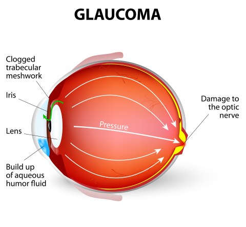

GLOKOM Nedir? Tanı ve Tedavi Yöntemleri
Glokom hastalığına dikkat çekmek için her yıl 12 Mart “Dünya Glokom Günü”, 8-14 Mart tarihleri arasında da “Dünya Glokom Haftası” olarak kutlanmaktadır.
Halk arasında "Göz Tansiyonu" ya da "Karasu Hastalığı" olarak bilinen Glokom, göz içi basıncının sıklıkla yükselmesi nedeniyle görme sinirinin zarar görmesidir.
Glokom hastalığı “gözün sessiz hırsızı” diye de anılmaktadır. Bu kadar yaygın bir hastalık olmasına rağmen hastaların çoğu hastalığından habersizdir. Bunun nedeni de zannedilenin aksine hiçbir öncü belirtisinin olmaması ve ileri evrelere varmadıkça hastanın hissedebileceği belirtilerin bulunmamasıdır.
Normal şartlarda gözümüzün içerisinde "Aköz sıvı" diye de bilinen bir sıvı vardır ve bu göz içi sıvısı eş zamanlı olarak bazı yollarla (trabeküler ağ) gözü terk eder. Göz tansiyonu hastalığında, göz içi sıvısının dışa akım yolunda çıplak gözle görülmeyecek boyutta bir tıkanıklık oluşur ve bunun sonucunda artan bu göz içi sıvısı, göz içi basıncının artmasına neden olur. Artan göz içi basıncı da optik sinir olarak da bilinen görme sinirine bası yoluyla zarar vererek, sinirin geriye dönüşümsüz harabiyetine neden olur.
Glokomun nedeninin göz içi sıvısının dışarı atılmasındaki soruna bağlı göz içi basıncının (göz tansiyonu) yükselmesi olduğu söylenebilir. Göz tansiyonunun toplumda ortalama değeri 16 mmHg olup genelde 10-21 mmHg arası normal aralık olarak kabul edilse de glokomun birçok çeşidi olduğunu unutmamak gerekir. Pigment Glokomu, neovasküler, eksfoliyatif, konjenital gibi birçok glokom tipi bulunmakta. Bu nedenle göz tansiyonu ölçümünün dışında kornea kalınlığı ölçümü, göz siniri ve retina incelenmesi mutlaka yapılmalıdır.
Glokomun Belirtileri
- Sabahları oluşan baş ağrıları
- Zaman zaman bulanık görme
- Geceleri ışıkların etrafında ışıklı halkalar görülmesi
- Parlak ekranları izlerken göz etrafında ağrı
Glokom Riskini Artıran Faktörler Nelerdir?
- Ailede glokom geçmişinin olması (genetik yatkınlık)
- 40 yaşın üzerinde olunması
- Şeker hastalığı
- Şiddetli kansızlık veya şoklar
- Yüksek-düşük sistemik kan basıncı (vücut tansiyonu)
- Yüksek miyopi
- Yüksek hipermetropi
- Migren
- Uzun süreli kortizon tedavisi
- Göz yaralanmaları
- Irksal faktörler
Bu özelliklere sahip kişilerde glokom hastalığının erken tespiti amacıyla düzenli olarak göz muayenelerini yaptırmaları gerekmektedir.
Açık Açılı Glokom Nedir?
En sık görülen glokom tipidir. İleri yaşta ortaya çıkar (50-60 yaş). Drenaj açısının yıllar içerisinde fonksiyonunun azalması ve göz içi sıvısının yeterince boşalamaması nedeniyle göz içi basıncı (göz tansiyonu) yükselir ve göz sinirinde hasara neden olur. Bu hastalarda göz içi basıncı 20 mm Hg’nin üzerindedir. Ancak göz sinir yapısı hassas olan bazı kişilerde, normal göz tansiyonu değerlerinde de görme siniri hasarı görülebilir.
Dar Açılı Glokom Nedir?
Glokomun daha az sıklıkta görülen tipidir. Genellikle yapısı daha küçük olan hipermetrop gözlerde, iris dokusunun (gözün renkli kısmı) drenaj açısına çok yakın pozisyonda yerleşmesi ve bu açıyı kapatmasıyla ortaya çıkar.
Göz tansiyonu ani bir şekilde 40 -50 mmHg değerlere kadar yükselir. Bu durum oldukça ağrılıdır. Birlikte bulantı – kusma olabilir ve görme bulanıklaşır. Acil olarak tedavi edilmesi gereken bu durum kalıcı körlüğe neden olabilir. Dar açılı glokom hastalarının bir kısmında açı kapanması yıllar içerisinde ve yavaş yavaş gelişebilir.
TANISI
Glokom, herkeste olabilir ve hastalığa bağlı görme kaybını engellemenin tek yolu erken tanıdır. Özellikle 40 yaş üzerinde 100 kişiden yaklaşık 2,5’inde glokom (göz tansiyonu) olma riski vardır ve yaşın artışıyla birlikte toplumda glokom görülme riski artar.
Glokom Tanısı için uygulanan yöntemler;
- Göz içi basınç (GİB) ölçümü: GİB farklı yöntemler kullanılarak ölçülebilir. Bunlar havalı ölçüm, aplanasyon yöntemi ile ölçüm ve Tonopen, İcare gibi cihazlarla yapılan ölçümlerdir.
- Kornea kalınlığı (Pakimetri) ölçümü: Hekimin bazı hastalarda ilaca başlayıp başlamama kararına yardımcıdır. Normal popülasyonda ortalama kornea kalınlığı 530 mikron civarındadır. Kornea kalınlığı fazla olan hastalarda göz tansiyonu ölçümü yalancı yükseklik olarak normal değerinin üzerinde çıkabilir veya kornea kalınlığı 500 mikrondan düşük olan hastalarda göz tansiyonu olduğundan düşük çıkabilir.
- Gonyoskopi: Göz suyunun kılcal damarlara boşaldığı bölge olan, “gözün lavabosu” niteliğindeki ağsı yapının yer aldığı ön kamara açısının incelenmesi glokom muayenesinin önemli bir parçasıdır.
- Bilgisayarlı görme alanı ölçümü: Glokom hastalığının tanı ve takibinde önemlidir.
- Optik sinir başı, sinir lifi tabakası ve maküler bölge analizleri: Özellikle optik sinir başında, retina sinir lifi tabakasında ve maküler bölgede glokoma bağlı değişimler OCT(Optik Koherens Tomografi) tetkiki ile çok hassas ve tanısını çok erken aşamada olarak saptanabilmektedir.
- Ön segment görüntüleme yöntemleri: Glokomlu olgularda tanı ve takipte ön segment dediğimiz, gözün ön kısmındaki oluşumlardaki değişimlerin tespiti
- Diğer testler: Glokom hastalarının tanı ve takibinde, yukarıdaki rutin yöntemler dışında ihtiyaç duyulduğunda orbital B Mod ultrasonografi, anjiyografi, elektrofizyolojik testler, mikroperimetri gibi testler ve genel anestezi altında muayene (özellikle bebek hastalar) yapılabilmektedir.
TEDAVİSİ
Glokomun tedavisinde başlıca üç yol mevcuttur.
1-) İlaç Tedavisi
Göz tansiyonu, ya gözdeki sıvının üretimini azaltarak ya da çıkışını arttırarak düşürülür. Bu iki yöntem için kullanılan ilaçlar vardır. Bu ilaçlar, her gün belirli aralıklarla alınan ve de hayat boyu kullanılan damlalardır. Bu damlalara her hastadan farklı şekilde cevap alındığından ve yan etkileri de söz konusu olabildiğinden, doktorunuz sizin için uygun olacak ilacı seçer ve sonucunu gözlemler.
2-) Lazer Tedavisi
Göz tansiyonu tedavisinde lazer ışını ilk olarak, akut glokom krizi tedavisinde ve diğer gözün glokom krizine girmesinin engellenmesinde, kronik glokom vakalarında, göz içinde yapılan sıvının dışa çıkışını kolaylaştırmak için , bir diğer kullanım alanı ise gözün dış kısmındaki renkli kısmın çevresindeki beyaz bölgeye lazer uygulanılmasıdır. Amaç, bu kısmın iç tarafında bulunan ve göz suyunu salgılayan bölgenin tahrip edilerek göz suyu üretiminin azaltılmasıdır.
3-) Cerrahi Tedavi
İlaç veya lazer tedavisine rağmen hastanın, göz tansiyonu düşmüyor ve hastalıkta ilerleme devam ediyorsa; uygulanacak tedavi yöntemi çoğunlukla ameliyattır. Glokomun evresine ve gözün durumuna göre doktor çok çeşitli ameliyat tekniklerinden birini hastaya uygular.
Trabekülektomi
Göz suyunun gözün dışındaki damarlara tahliye olmasını hedefleyen ameliyatlar en sık uygulanan ameliyatlardır. Bunlardan ilki, trabekülektomi ameliyatı olarak da adlandırılan, göz içinden yeterince tahliye olamayan sıvının göz küresi dışı damarlara filtre olabilmesi amacıyla göz duvarına yeni ince kanalların oluşturulduğu ameliyattır.
Tüp İmplantasyonu
Seton ya da tüp ameliyatı denen yöntemde, göz içerisine yerleştirilen slikon yapıdaki ince tüp kısmı ve göz küresi dışındaki katmanlar arasına yerleştirilen rezervuar kısmı olan, implantlarla göz suyunun tahliye olması sağlanır ve göz tansiyonu kontrol altına alınır.
Siklodestrüktif İşlemler
Göz suyunun yapımının azaltılması işlemidir. Bu eskiden kriyodestrüksiyon(dondurma ) yöntemiyle gerçekleştirilirdi. Son zamanlarda diyot lazer kullanılarak yapılmaktadır.
Kaynaklar:
- Prof. Dr. Esin BAŞER
- Prof. Dr. Metin EKİNCİ
- DÜNYA GÖZ